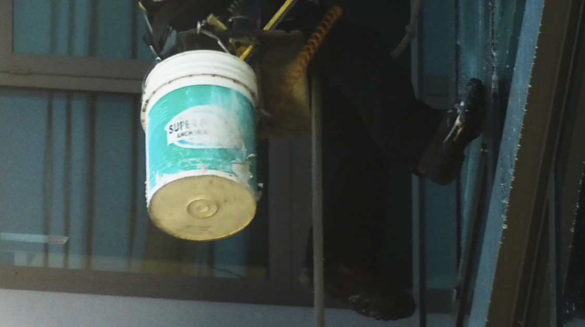
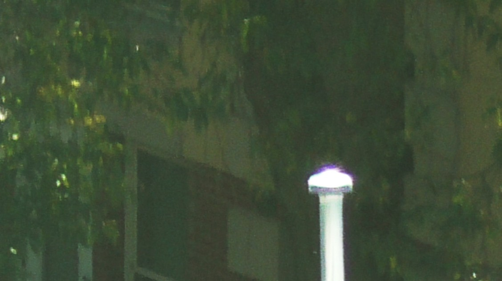

His Garden/他的花园
2024, 14 min
Digital Video
SO... WHAT IS A DOCUMENTARY?
A person,
or
(a film is a video—an artificial container of certain messages)
an institution... making a point,
establishing an “unbiased” authority,
or combating the grandiose—the “icon”?
But how does one entity prove honesty and sincerity overoneanother.
Scientifically speaking.
(facts or craft?)
cinéma vérité, structuralism, or post-post-post-.
Wordplay, rhetoric, persuasion.
hm...
Personal documentaries are fictional narratives—
a use of rhetoric, like cinéma vérité.
(Only partial truths emerge when filmmaking stops being a craft.)
An idea—
a relic of the 20th century......yet......yet
(I can prove nothing but the way of my looking.)
His Garden is a documentary style video poem.

